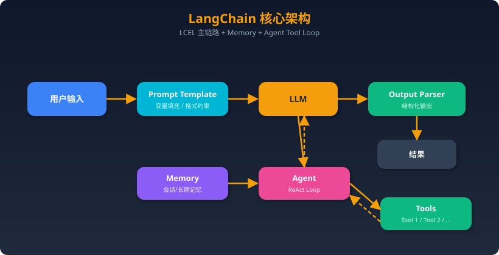
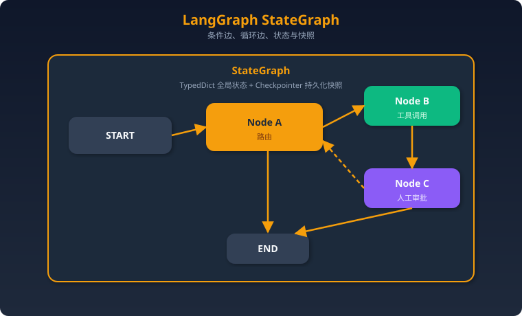
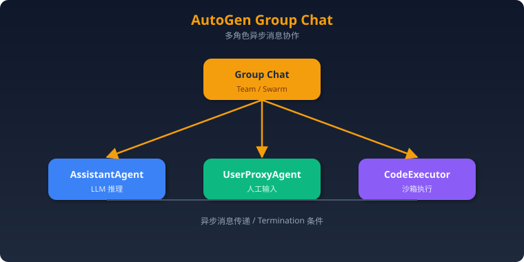
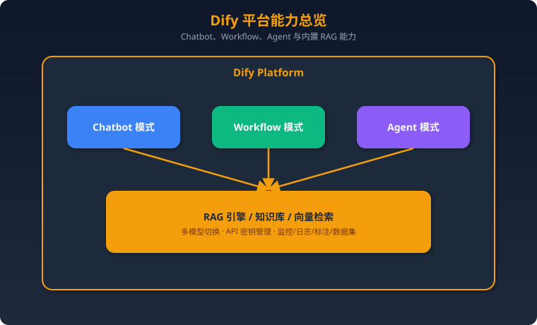
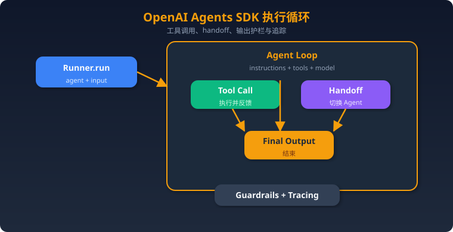
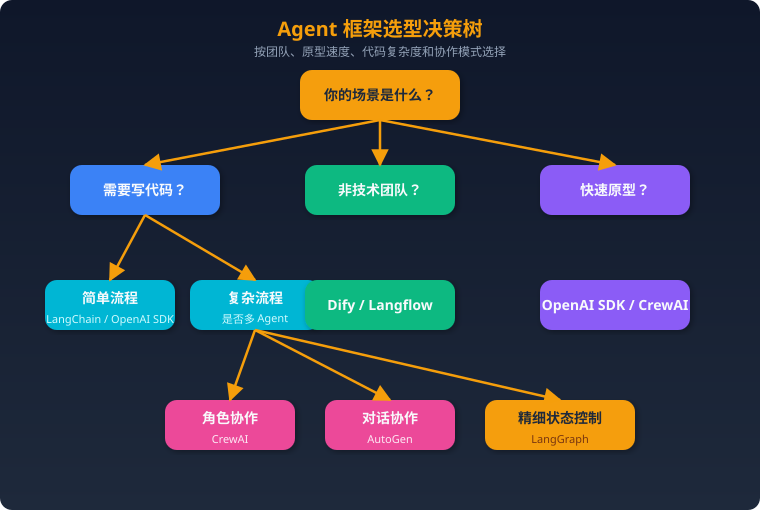
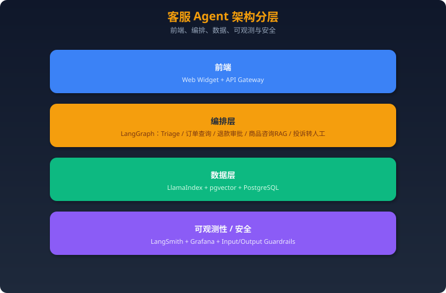

AI Agent 开源框架全景（2025）
面试必备：覆盖主流 Agent 编排框架、RAG 框架、向量数据库，含深度对比、选型实战和 15 道面试题。
一、Agent 编排框架
1. LangChain
定位：最主流的 LLM 应用开发框架，模块化组件 + 预构建 Agent 架构。
核心架构（文字描述）：

采用"链式调用"架构。核心是 LCEL（LangChain Expression Language），用管道操作符| 将 Prompt、LLM、OutputParser 等组件串联成 Runnable 链。Agent 模式下，LLM 作为推理引擎进入 ReAct 循环，动态选择 Tool 执行。
关键 API / 概念：
| 概念 | 说明 |
|------|------|
| Chain / LCEL | prompt | llm | parser 管道式组合，替代旧版 LLMChain |
| Agent | create_react_agent() / create_tool_calling_agent() 创建带工具调用的推理 Agent |
| Tool | @tool 装饰器定义工具，支持 Pydantic schema 自动推导 |
| Memory | ConversationBufferMemory、ConversationSummaryMemory 等多轮记忆 |
| Retriever | 统一检索接口，桥接向量库 / BM25 / 自定义检索 |
| Callback | on_llm_start / on_tool_end 等生命周期钩子，用于日志 / 监控 |
真实使用场景案例：
- 客服机器人：Prompt → LLM → 判断意图 → 调用订单查询 Tool → 返回结果。链式结构清晰，适合意图-槽位填充模式。
- 文档问答：PDF 加载 → 文本切分 → Embedding → 向量库存储 → Retriever + LLM 生成答案。LangChain 的 RecursiveCharacterTextSplitter + VectorStoreRetriever 是标准 RAG 管道。
优势 vs 局限： | 优势 | 局限 | |------|------| | 生态最大，集成 700+ 组件 | 抽象层过重，调试困难（"黑盒"问题） | | LCEL 声明式语法简洁 | 版本迭代快，API 频繁废弃 | | 文档和教程资源最丰富 | 复杂流程需要切换到 LangGraph | | 社区活跃，GitHub 95k+ star | 生产环境需额外工程化（重试/限流/可观测） |
2. LangGraph
定位：LangChain 生态的有状态 Agent 编排框架，用有向图建模复杂工作流。
核心架构（文字描述）：

将工作流建模为 StateGraph，每个 Node 是一个函数，Edge 定义流转（支持条件分支和循环）。State 是全局共享的 TypedDict，每次 Node 执行后更新。Checkpointer 支持断点续跑和时光回溯。关键 API / 概念：
| 概念 | 说明 |
|------|------|
| StateGraph | 核心图定义，泛型参数为 State 类型 |
| add_node(name, fn) | 添加节点，fn 接收 State 返回更新 |
| add_edge / add_conditional_edges | 定义无条件 / 条件流转 |
| Checkpointer | SqliteSaver / PostgresSaver 持久化状态快照 |
| interrupt_before / interrupt_after | 人工干预（Human-in-the-loop）断点 |
| Command / Send | 多 Agent 消息传递和并行扇出 |
| LangGraph Platform | 托管部署，自带 API 服务和 Studio 可视化 |
真实使用场景案例： - 多步骤代码生成：需求分析 → 代码生成 → 代码执行 → 错误检测 → 修复（循环）→ 输出。LangGraph 的循环边天然支持"生成-测试-修复"迭代。 - 客服升级系统：AI 自动回复 → 置信度低时 interrupt → 人工接管 → 继续。Checkpoint 保证中断后状态不丢失。 - 多 Agent 协作：每个 Agent 是一个子图（subgraph），通过 supervisor 节点路由分派。
优势 vs 局限： | 优势 | 局限 | |------|------| | 原生支持循环、条件、并行 | 学习曲线陡峭，需理解图论概念 | | Checkpoint 实现断点续跑 + 时光旅行 | 简单场景过度设计 | | Human-in-the-loop 一等公民 | 强绑定 LangChain 生态 | | 多 Agent 编排灵活（子图嵌套） | 调试需要 LangSmith / Studio 辅助 |
面试高频：LangChain vs LangGraph 如何互补？
LangChain 负责"组件层"（Prompt/LLM/Tool/Retriever 等乐高积木），LangGraph 负责"编排层"（积木如何拼接、何时循环、何时等人审批）。简单线性流程用 LCEL 即可；需要循环、分支、持久化状态、多 Agent 时上 LangGraph。
3. CrewAI
定位：角色扮演多智能体框架，模拟真实团队协作。
核心架构（文字描述）：
Crew（团队）
├── Agent 1: 研究员（Role + Goal + Backstory + Tools）
├── Agent 2: 写手（Role + Goal + Backstory + Tools）
└── Agent 3: 编辑（Role + Goal + Backstory + Tools）
│
↓
Process（流程策略）
├── Sequential（顺序执行）
├── Hierarchical（层级管理，Manager Agent 分派）
└── Consensual（共识协商，实验性）
│
↓
Task 1 → Task 2 → Task 3 → 最终输出
关键 API / 概念：
| 概念 | 说明 |
|------|------|
| Agent(role, goal, backstory, tools, llm) | 定义角色化 Agent |
| Task(description, agent, expected_output) | 分配任务给指定 Agent |
| Crew(agents, tasks, process) | 组装团队并执行 |
| Process.sequential / hierarchical | 执行策略 |
| @tool | 自定义工具装饰器 |
| CrewAI Flow | 新增的事件驱动编排层，支持条件/循环 |
真实使用场景案例： - 内容创作流水线：研究员 Agent 搜索资料 → 写手 Agent 撰写文章 → SEO Agent 优化标题关键词 → 编辑 Agent 终审。每个角色有独立的系统提示和工具集。 - 招聘筛选系统：简历解析 Agent → 技能匹配 Agent → 面试问题生成 Agent。
优势 vs 局限： | 优势 | 局限 | |------|------| | 角色定义直观，业务人员易理解 | 底层依赖 LangChain，调试穿透性差 | | Hierarchical 模式自带 Manager | 复杂流程控制不如 LangGraph 灵活 | | 上手极快，几十行代码跑起多 Agent | 角色设计不当会导致 Agent 互相"推诿" | | CrewAI Enterprise 提供托管部署 | 大规模生产环境案例还不够多 |
4. AutoGen（微软）
定位：多 Agent 对话框架，以消息传递驱动协作。2024 年底发布 AutoGen 0.4 大重构（AgentChat + Core + Extensions）。
核心架构（文字描述）：

关键 API / 概念（0.4 版）：
| 概念 | 说明 |
|------|------|
| AssistantAgent | 带 LLM 推理和工具调用的 Agent |
| UserProxyAgent | 人工代理，支持自动/手动回复 |
| RoundRobinGroupChat | 轮询式多 Agent 对话 |
| SelectorGroupChat | LLM 动态选择下一个发言者 |
| Swarm | OpenAI Swarm 风格的 handoff 模式 |
| CodeExecutor | Docker / 本地沙箱代码执行 |
| Termination | MaxMessageTermination / TextMentionTermination 等停止条件 |
真实使用场景案例： - 代码调试协作：AssistantAgent 生成代码 → CodeExecutor 执行 → 错误反馈 → AssistantAgent 修复。自然的"对话式调试"。 - 研究论文分析：多个专家 Agent（统计学家、领域专家、批评者）在 GroupChat 中讨论论文，涌现出更全面的分析。
优势 vs 局限： | 优势 | 局限 | |------|------| | 对话式交互最自然 | 对话轮次不可控，容易"聊跑偏" | | 代码执行能力强（Docker 沙箱） | 0.4 重构后与 0.2 API 不兼容 | | 支持异步、分布式 Agent | 生产部署文档和案例较少 | | 微软背书，研究场景丰富 | 工作流控制不如图结构框架精确 |
5. Dify
定位：LLM 应用开发平台，无代码 / 低代码，开源自部署。
核心架构（文字描述）：

关键概念： - 应用类型：Chatbot（对话）、Text Generator（文本生成）、Agent（自主决策）、Workflow（可视化流程） - 可视化 Workflow 编辑器：拖拽节点（LLM / 条件 / 代码 / HTTP / 知识检索）构建流程 - 知识库：上传文档 → 自动切分 → Embedding → 向量检索，内置 RAG 管道 - 多模型管理：统一接口管理 OpenAI / Claude / 本地模型等
真实使用场景案例： - 企业知识库问答：上传公司文档 → 自动构建知识库 → 部署为 Chatbot。非技术人员即可操作。 - 审批工作流：用 Workflow 模式编排 LLM 判断 + 条件分支 + API 调用 + 人工审核节点。
优势 vs 局限： | 优势 | 局限 | |------|------| | 可视化编排，非技术人员可用 | 复杂逻辑表达受限于可视化界面 | | 内置 RAG、监控、标注全套 | 深度定制需 fork 源码 | | 开源自部署，数据可控 | 多 Agent 协作支持较弱 | | 中文社区活跃，国内企业友好 | 高并发性能需自行优化 |
6. OpenAI Agents SDK（🔥 2025 热门）
定位：OpenAI 官方发布的轻量级 Python Agent 框架（2025 年 3 月发布），前身为 Swarm 实验项目。设计哲学是"少即是多"——用最少的抽象覆盖大部分 Agent 场景。
核心架构（文字描述）：

关键 API / 概念：
| 概念 | 说明 |
|------|------|
| Agent(name, instructions, tools, model) | 核心类，定义 Agent 的指令、工具和模型 |
| Runner.run(agent, messages) | 执行 Agent 循环，自动处理工具调用和 Handoff |
| @function_tool | 将 Python 函数注册为工具，自动推导 JSON Schema |
| Handoff | Agent 间切换机制：handoff(target_agent) |
| Guardrail | 输入/输出安全护栏，如 InputGuardrail、OutputGuardrail |
| Tracing | 内置调用追踪，可对接 Logfire / 自定义 Exporter |
| RunContext | 依赖注入容器，跨工具共享上下文 |
| ModelSettings | 温度、top_p 等模型参数配置 |
核心设计原则： 1. Agent 循环：Agent 被调用 → LLM 推理 → 工具调用或 Handoff 或最终输出 → 循环直到结束 2. Handoff 机制：Agent A 可以"移交"控制权给 Agent B，实现多 Agent 协作（类似客服转接） 3. 护栏：在 Agent 循环外层套安全检查，异步并行执行不影响性能 4. 可观测性：内置 Tracing 支持，生产环境必备
真实使用场景案例： - 智能客服分流：Triage Agent 判断意图 → Handoff 到退款 Agent / 技术支持 Agent / 销售 Agent。每个子 Agent 有独立工具集。 - 数据分析助手：Agent 接收自然语言查询 → 调用 SQL 工具 → 执行查询 → 用 Python 工具画图 → 返回分析报告。 - 代码审查：Agent 读取 PR diff → 调用静态分析工具 → 生成审查意见。
优势 vs 局限： | 优势 | 局限 | |------|------| | 极简 API，30 行代码实现多 Agent | 仅原生支持 OpenAI 模型（社区适配其他模型） | | Handoff 机制优雅直观 | 无内置持久化状态（需自行管理） | | 内置 Tracing 和 Guardrails | 无可视化编排界面 | | OpenAI 官方维护，与 API 深度集成 | 框架较新，生态和文档还在完善 | | 类型安全，Pydantic 输出验证 | 复杂图结构工作流不如 LangGraph |
代码示例（感受简洁度）：
from agents import Agent, Runner, function_tool
@function_tool
def get_weather(city: str) -> str:
"""获取城市天气"""
return f"{city}: 晴，25°C"
agent = Agent(
name="天气助手",
instructions="你是天气查询助手",
tools=[get_weather]
)
result = Runner.run_sync(agent, "北京天气怎么样？")
print(result.final_output)
7. Google Agent Development Kit (ADK)
定位：Google 于 2025 年 4 月发布的开源 Agent 开发框架，深度集成 Gemini 模型和 Google Cloud 生态。
核心架构（文字描述）：
Agent
├── LlmAgent（LLM 驱动的推理 Agent）
├── SequentialAgent（顺序编排多个子 Agent）
├── ParallelAgent（并行执行子 Agent）
└── LoopAgent（循环执行直到满足条件）
│
↓
Tools: Google Search / Code Execution / 自定义函数 / MCP 工具
│
↓
Session / State / Memory（会话状态管理）
│
↓
部署: Cloud Run / Vertex AI / Agent Engine
关键概念：
| 概念 | 说明 |
|------|------|
| LlmAgent | 核心 Agent 类型，用 Gemini 或其他 LLM 推理 |
| SequentialAgent / ParallelAgent / LoopAgent | 内置编排原语 |
| Tool / FunctionTool | 工具定义，支持 MCP 协议 |
| Session / State | 会话和状态管理 |
| Callback | before_agent_call / after_tool_call 等钩子 |
| A2A Protocol | Agent-to-Agent 通信协议（Google 提出的标准） |
优势 vs 局限： | 优势 | 局限 | |------|------| | 深度集成 Google 生态（Search/Vertex） | Gemini 之外的模型支持有限 | | 内置编排原语（Sequential/Parallel/Loop） | 框架非常新，社区还小 | | 支持 MCP 和 A2A 协议 | 文档和示例较少 | | 提供 Web UI 调试界面 | 生产案例极少 |
8. Mastra（JS/TS 生态）
定位：面向 TypeScript 开发者的 AI Agent 框架，填补 JS 生态的 Agent 框架空白。
核心架构：
Mastra Framework
├── Agent（LLM + Tools + Memory）
├── Workflow（基于 XState 状态机的工作流）
├── RAG（内置向量检索管道）
├── Syncs（第三方数据同步）
└── Evals（内置评估工具）
关键特性： - TypeScript 原生：类型安全，适合全栈 JS 团队 - 工作流引擎：基于 XState 状态机，支持分支、循环、暂停恢复 - 内置 RAG：集成 Pinecone / pgvector 等向量库 - 工具集成：支持 MCP 协议，可直接使用 MCP 工具服务器
适用场景：全栈 TypeScript 团队构建 AI 应用，前后端统一技术栈。
9. Pydantic AI
定位：由 Pydantic 团队开发的 Python Agent 框架，强调类型安全和生产就绪。
核心架构：
PydanticAI Agent
├── System Prompt（静态 + 动态）
├── Tools（@agent.tool 装饰器）
├── Structured Result（Pydantic Model 验证输出）
├── Dependencies（依赖注入系统）
└── Model（统一接口：OpenAI / Anthropic / Gemini / Groq / Ollama）
关键特性：
- 结构化输出：用 Pydantic Model 定义输出格式，自动验证
- 依赖注入：RunContext[Deps] 注入数据库连接、API 客户端等
- 多模型支持：统一接口覆盖主流 LLM
- Logfire 集成：内置可观测性支持
- 流式输出：支持 run_stream() 流式返回
优势 vs 局限： | 优势 | 局限 | |------|------| | 类型安全，Pydantic 验证输出 | 多 Agent 编排支持较弱 | | 依赖注入设计优雅 | 社区规模小于 LangChain | | 多模型统一接口 | 无可视化编排 | | 生产级质量（Pydantic 团队出品） | 工作流控制需自行实现 |
10. Semantic Kernel（微软）
定位：微软开源的 AI 编排 SDK，支持 C# / Python / Java，面向企业级应用。
核心架构：
Kernel（内核）
├── AI Services（OpenAI / Azure OpenAI / Hugging Face）
├── Plugins（插件 = 一组 Functions）
│ ├── Semantic Function（Prompt 模板）
│ └── Native Function（代码函数）
├── Planner（自动规划执行步骤）
├── Memory（向量记忆）
└── Filters（前置/后置过滤器）
关键概念：
| 概念 | 说明 |
|------|------|
| Kernel | 核心容器，注册 AI 服务和插件 |
| Plugin | 功能插件，包含多个 Function |
| KernelFunction | 单个可调用函数（Prompt 或代码） |
| Planner | AI 自动规划多步骤执行计划 |
| Process Framework | 新增的有状态工作流（类似 LangGraph） |
| Agent Framework | 多 Agent 支持（ChatCompletion / OpenAI Assistant） |
优势 vs 局限： | 优势 | 局限 | |------|------| | 企业级：C# / Java 支持，.NET 生态集成 | Python 社区关注度不如 LangChain | | 深度集成 Azure OpenAI | 抽象概念多，上手有门槛 | | 插件系统可复用性强 | 社区活跃度一般 | | 微软长期维护保障 | 与 Azure 绑定感较强 |
11. Langflow
定位：低代码可视化框架，用拖拽方式构建 Agent 和 RAG 工作流。
核心特性： - 可视化画布编辑器 - 导出为 Python 代码 - 内置组件市场 - 一键部署为 API
适用场景：快速原型验证、非技术团队使用、教学演示。
二、RAG 框架
1. LlamaIndex
定位：LLM 数据框架，专注数据摄取、索引、查询。
核心架构：
数据源 → Reader/Loader → Document → Node Parser → 切分
→ Embedding → Index（VectorStore / KG / Summary）
→ Retriever → Response Synthesizer → 答案
关键概念： - Document / Node：文档和切分后的节点 - Index：VectorStoreIndex / KnowledgeGraphIndex / SummaryIndex 等 - QueryEngine：封装检索+生成的查询引擎 - Router：多索引路由查询 - Agent：LlamaIndex 也有自己的 Agent 层（ReAct / Function Calling）
真实场景：复杂文档结构（PDF 表格、层级文档）的精准问答，多源异构数据的统一检索。
优势：数据处理能力强，索引类型丰富，适合复杂 RAG。 局限：Agent 编排能力不如 LangGraph，主要聚焦数据层。
2. Haystack（Deepset）
定位：企业级 RAG 框架，管道式架构。
核心特性： - 模块化 Pipeline 架构（Component → Pipeline） - 强大的评估工具和基准测试 - 生产级部署支持（REST API、Docker） - 支持自定义 Component
适用场景：企业级搜索增强系统，需要严格评估和 CI/CD 的 RAG 管道。
3. RAGFlow
定位：深度文档理解 RAG 引擎。
核心特性： - 擅长复杂文档（PDF 表格、扫描件、多列排版） - 内置 OCR 和版面分析 - 支持多种切分策略（语义切分、表格切分）
适用场景：金融报告、法律文书、医疗病历等复杂文档的 RAG。
4. DSPy（斯坦福 NLP）
定位：用"编程"代替"提示"的声明式框架。
核心概念：
- Signature：声明输入输出（"question -> answer"）
- Module：dspy.ChainOfThought、dspy.ReAct 等可组合模块
- Optimizer：BootstrapFewShot、MIPROv2 等自动优化提示
- Metric：定义评估指标，驱动自动优化
核心理念：不手写 Prompt，而是定义 Signature + Metric，让框架自动优化 Prompt 和 few-shot examples。
适用场景：需要系统化优化 RAG 管道效果的研究和生产场景。
5. Pathway
定位：高吞吐量低延迟 RAG 框架。 - 350+ 数据源连接器 - 实时增量索引更新 - 适合大规模部署和流式数据场景
三、向量数据库（RAG 必备）
| 数据库 | 类型 | 特点 | 适用场景 | 语言/协议 |
|---|---|---|---|---|
| Pinecone | 全托管 SaaS | 简单易用，自动扩缩容 | 快速上手，中小规模 | REST / gRPC |
| Weaviate | 开源/云 | 混合搜索（向量+关键词），GraphQL API | 需要自定义部署 | GraphQL / REST |
| Chroma | 开源嵌入式 | 轻量级，pip install 即用 | 本地开发、原型验证 | Python SDK |
| Milvus | 开源分布式 | 十亿级向量，GPU 加速 | 大规模生产环境 | gRPC / REST |
| Qdrant | 开源 | Rust 编写，高性能，丰富过滤 | 性能敏感场景 | gRPC / REST |
| FAISS | 库（Meta） | 非数据库，纯检索库 | 研究、嵌入现有系统 | C++ / Python |
| pgvector | PG 扩展 | PostgreSQL 原生扩展 | 已有 PG 基础设施 | SQL |
四、框架大对比表
Agent 编排框架横向对比
| 维度 | LangChain | LangGraph | CrewAI | AutoGen | Dify | OpenAI Agents SDK |
|---|---|---|---|---|---|---|
| 学习曲线 | ⭐⭐⭐ 中等 | ⭐⭐⭐⭐ 较陡 | ⭐⭐ 简单 | ⭐⭐⭐ 中等 | ⭐ 最简单 | ⭐⭐ 简单 |
| 生产就绪度 | ⭐⭐⭐⭐ 高 | ⭐⭐⭐⭐ 高 | ⭐⭐⭐ 中等 | ⭐⭐⭐ 中等 | ⭐⭐⭐⭐ 高 | ⭐⭐⭐ 中等（新） |
| 多 Agent 支持 | ⭐⭐ 基础 | ⭐⭐⭐⭐⭐ 强 | ⭐⭐⭐⭐ 强 | ⭐⭐⭐⭐⭐ 强 | ⭐⭐ 基础 | ⭐⭐⭐⭐ 强（Handoff） |
| 社区活跃度 | ⭐⭐⭐⭐⭐ | ⭐⭐⭐⭐ | ⭐⭐⭐⭐ | ⭐⭐⭐⭐ | ⭐⭐⭐⭐ | ⭐⭐⭐（增长快） |
| 可视化 | ❌（需 LangSmith） | ✅ LangGraph Studio | ❌ | ❌（AutoGen Studio） | ✅ 内置 | ❌ |
| 模型绑定 | 无绑定 | 无绑定 | 无绑定 | 无绑定 | 无绑定 | OpenAI 优先 |
| 编程语言 | Python / JS | Python / JS | Python | Python / C# | Python（后端） | Python |
| 状态持久化 | ❌ 需自行实现 | ✅ Checkpointer | ❌ 需自行实现 | ⚠️ 基础 | ✅ 内置 | ❌ 需自行实现 |
| 适用场景 | 线性管道、RAG、快速原型 | 复杂有状态工作流 | 角色协作、内容生成 | 研究、代码任务 | 无代码应用构建 | 轻量多 Agent、OpenAI 生态 |
| GitHub Star | 95k+ | 12k+ | 25k+ | 38k+ | 60k+ | 15k+（增长极快） |
五、框架选型实战
5.1 按业务需求选框架
| 业务需求 | 推荐框架 | 理由 |
|---|---|---|
| 简单聊天机器人 | OpenAI Agents SDK / LangChain | 少量代码快速实现 |
| 企业知识库问答 | Dify + LlamaIndex | Dify 提供 UI 和 RAG，LlamaIndex 处理复杂文档 |
| 复杂审批工作流 | LangGraph | 需要条件分支、循环、人工干预、状态持久化 |
| 多角色内容创作 | CrewAI | 角色化设计天然匹配 |
| 代码生成/调试 | AutoGen / OpenAI Agents SDK | 代码执行和迭代修复 |
| 客服分流系统 | OpenAI Agents SDK | Handoff 机制完美匹配 |
| 企业级 .NET 应用 | Semantic Kernel | C# 支持，Azure 集成 |
| 全栈 JS 团队 | Mastra | TypeScript 原生 |
| 研究实验 | AutoGen / DSPy | 灵活、可实验 |
| 非技术团队快速搭建 | Dify / Langflow | 可视化拖拽 |
5.2 框架组合的最佳实践
组合 1：LangChain + LangGraph（最常见） - LangChain 提供组件（Prompt/Tool/Retriever），LangGraph 编排工作流 - 适合：复杂企业应用，需要精细流程控制 - 示例：客服系统 = LangChain 工具定义 + LangGraph 状态机编排 + LangSmith 监控
组合 2：LlamaIndex + LangGraph - LlamaIndex 负责数据索引和检索，LangGraph 编排多步推理 - 适合：复杂 RAG 需要多轮检索、验证、重写 - 示例：法律文书分析 = LlamaIndex 多索引路由 + LangGraph 多步推理验证
组合 3：Dify + 自定义 Agent - Dify 做前端和基础 RAG，复杂逻辑通过 API 调用外部 Agent - 适合：团队混合技术水平，需要快速交付 - 示例：Dify 知识库 + 外部 LangGraph Agent 处理复杂推理
组合 4：CrewAI + LangGraph - CrewAI 定义角色和任务，LangGraph 精细控制工作流 - 适合：需要角色协作 + 复杂流程控制的场景
5.3 选型决策树

六、框架选型决策树（速查版）
需求分析
├── 简单 RAG / 聊天机器人 → LangChain + LlamaIndex
├── 复杂多步骤有状态工作流 → LangGraph
├── 多 Agent 角色协作 → CrewAI
├── 研究 / 快速原型 → AutoGen
├── 非技术团队快速搭建 → Dify / Langflow
├── 企业级 RAG → Haystack / Pathway
├── 自动优化检索 → DSPy
├── 轻量多 Agent + OpenAI 生态 → OpenAI Agents SDK
├── Google 生态 → Google ADK
├── TypeScript 全栈 → Mastra
├── .NET / Java 企业 → Semantic Kernel
└── 类型安全 Python Agent → Pydantic AI
七、面试题 15 题 + 参考答案
Q1：LangChain 和 LangGraph 有什么区别？什么时候该用 LangGraph？
参考答案： LangChain 是组件库 + 线性编排（LCEL），适合简单的链式调用（Prompt → LLM → Tool → Output）。LangGraph 是图结构编排框架，用有向图建模工作流。
该用 LangGraph 的信号： 1. 需要循环（如代码生成→测试→修复循环） 2. 需要条件分支（如根据分类结果走不同路径） 3. 需要持久化状态（如长时间运行的任务需要断点续跑） 4. 需要Human-in-the-loop（如审批节点） 5. 需要多 Agent 协作（每个 Agent 作为子图）
两者互补而非替代：LangChain 提供乐高积木，LangGraph 提供拼装蓝图。
Q2：解释 OpenAI Agents SDK 的 Handoff 机制，和传统多 Agent 框架有什么不同？
参考答案：
Handoff 是 OpenAI Agents SDK 的核心多 Agent 机制。当 Agent A 判断当前任务应由另一个 Agent 处理时，它返回一个 handoff() 调用，Runner 自动将控制权和对话历史转移给目标 Agent。
与传统框架的区别： - CrewAI：预定义任务分配，Agent 按顺序/层级执行固定流程 - AutoGen：Agent 通过消息传递对话，所有 Agent 共享聊天记录 - OpenAI Handoff：动态切换，当前 Agent 主动判断"该谁接手"，更像客服转接
优势：简洁，无需定义复杂的路由逻辑或消息协议；Agent 自己决定何时、向谁 Handoff。 劣势：控制粒度不如 LangGraph 的显式图结构。
Q3：CrewAI 的 Sequential 和 Hierarchical 模式有什么区别？各适用什么场景？
参考答案： - Sequential：Task 按顺序依次执行，前一个 Task 的输出作为后一个的输入。适合流水线式工作（研究→写作→编辑）。 - Hierarchical：自动创建 Manager Agent，由它决定任务分派和执行顺序。适合任务间有复杂依赖或需要动态调度的场景。
选择建议：任务流程清晰固定用 Sequential；任务间需要动态协调用 Hierarchical。
Q4：Dify 和 LangChain 分别适合什么团队？
参考答案： - Dify：适合混合技术背景团队（产品经理 + 少量开发），需要快速搭建和迭代 AI 应用，强调可视化和开箱即用。 - LangChain：适合纯技术团队，需要深度定制、灵活组合组件，愿意投入工程化的场景。
关键区别：Dify 是"平台"（带 UI、数据库、监控），LangChain 是"框架"（纯代码库）。非技术人员能用 Dify，用不了 LangChain。
Q5：LangGraph 的 Checkpoint 机制有什么用？怎么实现？
参考答案： Checkpoint 是 LangGraph 的状态持久化机制，在每个节点执行后自动保存完整状态快照。
用途：
1. 断点续跑：长时间运行的工作流中断后可以从最后一个 Checkpoint 恢复
2. Human-in-the-loop：在 interrupt_before 节点暂停，等人工审批后继续
3. 时光旅行：回溯到任意历史 Checkpoint，修改状态后重新执行
4. 错误恢复：某步失败后回退到上一步重试
实现：用 SqliteSaver / PostgresSaver 等 Checkpointer 作为参数传入 StateGraph.compile(checkpointer=...)。
Q6：AutoGen 0.4 和 0.2 有什么大变化？
参考答案：
AutoGen 0.4 是完全重构：
1. 架构分层：拆分为 Core（消息传递运行时）、AgentChat（高层 API）、Extensions（扩展）
2. 异步优先：原生 async/await，支持分布式 Agent
3. 新编排模式：新增 SelectorGroupChat（LLM 选择发言者）和 Swarm（Handoff 模式）
4. API 不兼容：0.2 代码需要迁移，import autogen → import autogen_agentchat
Q7：什么是 MCP（Model Context Protocol）？哪些框架支持？
参考答案： MCP 是 Anthropic 提出的标准协议，定义了 LLM 应用与外部工具/数据源之间的通信标准（类似 USB 协议）。
核心组件： - MCP Server：暴露工具和资源（如数据库查询、API 调用） - MCP Client：Agent 框架内的客户端，调用 MCP Server
支持的框架：OpenAI Agents SDK、Google ADK、Mastra、LangChain、Cursor、Claude Desktop 等。MCP 正在成为 AI 工具集成的事实标准。
Q8：如何设计一个生产级 Agent 系统的错误处理？
参考答案： 1. LLM 层：重试策略（指数退避）、fallback 模型（主用 GPT-4o，降级到 GPT-4o-mini）、token 限额 2. 工具层：每个工具设置超时、错误返回格式化（让 Agent 理解错误并换策略）、沙箱执行 3. 编排层：最大循环次数限制（防止无限循环）、人工干预断点、状态回滚 4. 系统层：Guardrails（输入/输出检查）、日志追踪（Tracing）、异常告警 5. 幂等性：关键操作（如发邮件、下单）确保幂等，避免重复执行
Q9：比较 RAG 领域的 LlamaIndex 和 LangChain，各自优势是什么？
参考答案： - LlamaIndex 优势：数据处理更专业（160+ 数据连接器、多种索引类型、子问题查询引擎）、复杂文档结构处理能力强（表格、层级文档、知识图谱） - LangChain 优势：生态更广（不仅是 RAG，还有 Agent、Chain 等）、社区更大、与 LangGraph 无缝集成
选择建议：纯 RAG 应用用 LlamaIndex；RAG + Agent + 复杂工作流用 LangChain + LangGraph。两者也可组合使用（LlamaIndex 做数据层，LangChain/LangGraph 做编排层）。
Q10：DSPy 的核心理念是什么？和 Prompt Engineering 有什么区别？
参考答案： DSPy 的核心理念是"编程，而非提示"（Programming, not Prompting）： - Prompt Engineering：手工编写和迭代 Prompt，依赖人的直觉和经验 - DSPy：定义 Signature（输入→输出声明）+ Metric（评估指标），框架自动生成和优化 Prompt
工作流：
1. 定义 dspy.Signature（如 "context, question -> answer"）
2. 组合 Module（如 dspy.ChainOfThought(signature)）
3. 定义 Metric 和 Training Set
4. 用 Optimizer（如 MIPROv2）自动搜索最优 Prompt + Few-shot Examples
优势：可复现、可自动优化、减少人工调参。
Q11：Semantic Kernel 和 LangChain 的主要区别是什么？
参考答案： | 维度 | Semantic Kernel | LangChain | |------|----------------|-----------| | 主要语言 | C# / Java / Python | Python / JS | | 目标受众 | 企业 .NET 开发者 | Python 生态开发者 | | 核心抽象 | Plugin（插件）+ Kernel | Chain + Agent + Tool | | 云绑定 | Azure 深度集成 | 云无关 | | 优势场景 | 已有 .NET 基础设施的企业 | Python AI 项目 |
核心区别在受众和生态：Semantic Kernel 是微软面向企业 .NET 世界的 AI 编排方案，LangChain 是 Python AI 社区的默认选择。
Q12：什么是 A2A（Agent-to-Agent）协议？和 MCP 有什么区别？
参考答案： - MCP（Model Context Protocol）：Agent 与工具/数据源之间的通信协议（Agent ↔ Tool） - A2A（Agent-to-Agent）：Google 提出的 Agent 与Agent之间的通信协议（Agent ↔ Agent）
互补关系：MCP 解决"Agent 怎么用工具"，A2A 解决"Agent 之间怎么协作"。一个完整的多 Agent 系统可能同时用到两者。
A2A 定义了 Agent Card（能力声明）、Task（任务传递）、Streaming（流式响应）等标准，目标是让不同框架构建的 Agent 能互相调用。
Q13：如何评估和对比不同 RAG 方案的效果？
参考答案： 评估维度： 1. 检索质量：Recall@K、MRR（Mean Reciprocal Rank）、NDCG 2. 生成质量：Faithfulness（忠实度）、Relevance（相关性）、Completeness（完整度） 3. 端到端：Answer Correctness（答案正确率）
评估工具： - RAGAS：开源 RAG 评估框架，自动化评分 - LlamaIndex Evaluator：内置评估模块 - Haystack Evaluation：管道级基准测试 - 人工评估：Golden set 人工标注 + 盲评
关键实践：先建立 Golden Test Set（标准问答对），再用自动化指标 + 人工抽检双重评估。
Q14：在生产环境中部署多 Agent 系统，最大的挑战是什么？
参考答案： 1. 成本控制：多 Agent 多次 LLM 调用，token 消耗成倍增长。需要缓存策略、小模型预判、短路机制。 2. 延迟：串行多步推理导致高延迟。需要并行化、流式输出、异步架构。 3. 可靠性：LLM 输出不确定性 × Agent 数量 = 系统级不确定性。需要 Guardrails、重试、fallback、人工兜底。 4. 可观测性：多 Agent 调用链复杂，需要完整 Tracing（如 LangSmith / OpenTelemetry）。 5. 状态管理：长时间运行的 Agent 需要持久化状态，处理 crash recovery。 6. 安全性：Prompt Injection、工具滥用、数据泄露。需要输入验证、工具权限控制、输出过滤。
Q15：如果让你从零设计一个 AI Agent 系统，你会怎么选型？请给出一个具体场景的完整方案。
参考答案（以"智能客服系统"为例）：
需求：电商平台客服系统，处理订单查询、退款申请、商品咨询、投诉升级。
选型方案：

选型理由： - LangGraph：客服系统需要条件分支（意图路由）、循环（澄清对话）、人工干预（退款审批）、状态持久化（跨会话记忆） - LlamaIndex：商品文档结构复杂（规格表、FAQ、政策文档），需要专业 RAG - 不选 CrewAI：客服场景不需要角色扮演，需要精确流程控制 - 不选 Dify：需要深度定制和高并发，可视化平台灵活度不够
本文档持续更新，最后更新：2025年3月